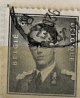
| SOURCE | TITLE| IMAGE MATCH | click to source page |
| eBay | BELGIUM:1938-41 SC#310 Used King Leopold III R | eBay | 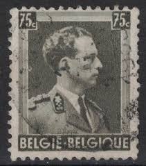 |
| HipStamp | Belgium Official 1954-59 1.50fr Used Stamp A25P60F21051- | Europe - Belgium & Colonies, Stamp / HipStamp | 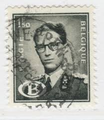 |
| eBay | Gray Used Belgian & Colonies Stamps for sale | eBay | 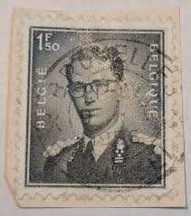 |
| HipStamp | Belgium 446: 1.50f King Baudouin, used, F-VF | Europe - Belgium & Colonies, General Issue Stamp / HipStamp | 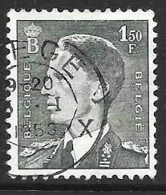 |
| eBay UK | 1953 Belgium - King Baudouin, "Marchand" - 1.50 Fr Stamp | eBay UK | 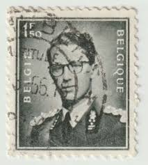 |
| HipStamp | Belgium 451: 1.50f King Baudouin, used, VF | Europe - Belgium & Colonies, General Issue Stamp / HipStamp | 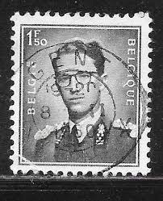 |
| eBay | Belgium Postage ~ Daily Postage 1 Francs ~ King Baudouin ~ Posted ~ c.1953 | eBay | 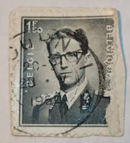 |
| HipStamp | Belgium 451 Used (3) | Europe - Belgium & Colonies, General Issue Stamp / HipStamp | 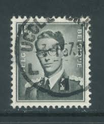 |
| Amazon.ca | Belgium 691B dentate 11 1/2 unmounted Mint/Never hinged ** MNH 1957 Leopold (Stamps for Collectors), Printing & Stamping - Amazon Canada | 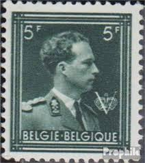 |
| Todocolección | belgica 1953. yvert 924. rey baudouin. personaj - Buy Antique stamps of Belgium on todocoleccion | 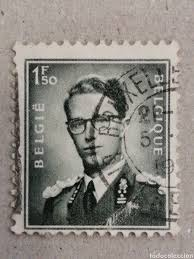 |
| HipStamp | Belgium 449 King Baudouin 1952 | Europe - Belgium & Colonies, General Issue Stamp / HipStamp | 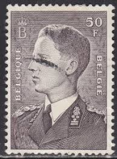 |
| HipStamp | Belgium #310 75c King Leopold III | Europe - Belgium & Colonies, General Issue Stamp / HipStamp | 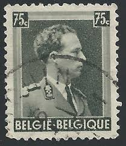 |
| HipStamp | Browse Products in Europe > Belgium & Colonies / HipStamp | 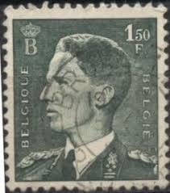 |
| Stampedia | stampedia BELGIUM STAMP catalog | 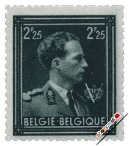 |
| Alamy | BELGIUM - CIRCA 1958: a stamp printed in the Belgium shows Telexpo Pavilion, World's Fair, Brussels, circa 1958 Stock Photo - Alamy | 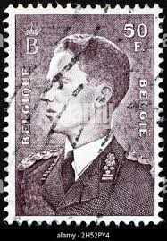 |
| HipStamp | Belgium 451: 1.50f King Baudouin, used, VF | Europe - Belgium & Colonies, General Issue Stamp / HipStamp | 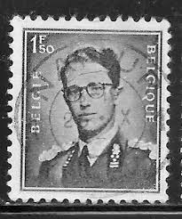 |
| HipStamp | Belgium 449a: 50f King Baudouin, used, F-VF | Europe - Belgium & Colonies, General Issue Stamp / HipStamp | 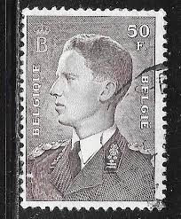 |
| HipStamp | Browse Products in Europe > Belgium & Colonies / HipStamp | 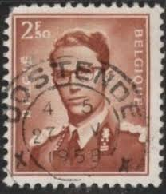 |
| Shutterstock | 3+ Thousand Dutch Post Stamp Royalty-Free Images, Stock Photos & Pictures | Shutterstock | 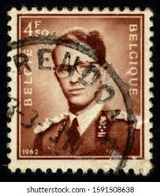 |
| Todocolección | sello bélgica rey balduino 3 f - Buy Antique stamps of Belgium on todocoleccion | 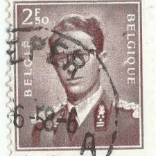 |
| HipStamp | Belgium #283 70c King Leopold III | Europe - Belgium & Colonies, General Issue Stamp / HipStamp | 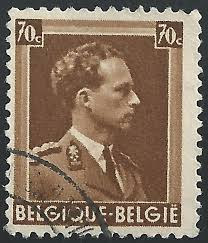 |
| eBay | Belgium Scott 461 Mint Hinged | eBay | 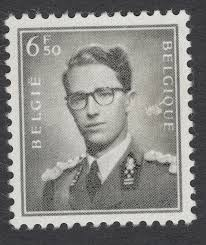 |
| Alamy | Postage stamp from Belgium in the King Albert I Small series issued in 1922 Stock Photo - Alamy | 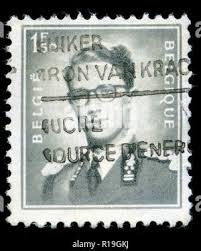 |
| eBay | OOS] Belgium #Mi1128yII MH 1971 King Baudouin Marchand [Coil][Fluorescent][456] | eBay | 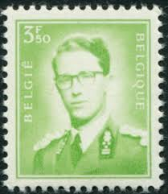 |
| eBay | 1953 Belgium Postage 2 Francs King Baudouin - Used Vintage Stamp | eBay | 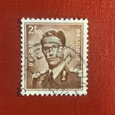 |
| eBay | Belgium Scott # 466 VF Unused 1958 9F King Baudouin | eBay | 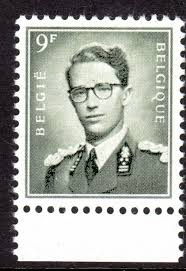 |
| ebid.net | Belgium 1936 - SG746 - 75c olive - King Leopold 111 - used on eBid United States | 158711364 | 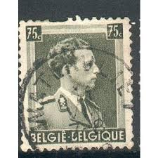 |
| Dreamstime.com | 306 Iii Belgium Stock Photos - Free & Royalty-Free Stock Photos from Dreamstime | 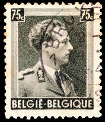 |
| Shutterstock | Karnal Haryana India -august 8th 2025-closeup Stock Photo 2673898853 | Shutterstock | 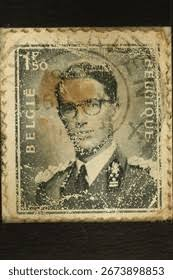 |
| eBay UK | Belgium 1953-1972 SG#1456, 2f50 King Boudouin Used #E85705 | eBay UK | 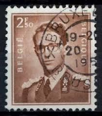 |
| eBay UK | Belgium 1936-1944 SG#745, 60c Bistre-Brown King Leopold III Used #E85331 | eBay UK | 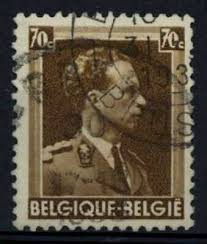 |
| eBay | 1936 Belgium SC#293: 5f King Leopold III. used -10P.C. surcharge VF | eBay | 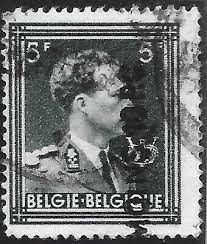 |
| eBay UK | Belgium 1936-1944 SG#746, 75c Olive King Leopold III Used #E85336 | eBay UK | 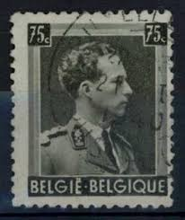 |
| eBay | BELGIUM 310i - King Leopold III "1938 Deep Olive Grey" (pb21431) | eBay | 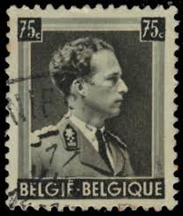 |
| Colnect | Belgium : Stamps [Year: 1972] [1/17] : Colnect 📮 |  |
| eBay | Belgium 1938 King Leopold 111 75c Fine Used SG 746 VGC TKS107* | eBay | 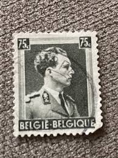 |
| HipStamp | Belgium, 1951, Ling Leopold III, 1.20f, used | Europe - Belgium & Colonies, Stamp / HipStamp | 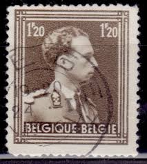 |
| eBay | Belgium Stamp 1944 / King Leopold / Sc357 // Used | eBay | 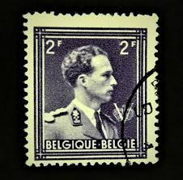 |
| HipStamp | Belgium 1936, King Leopold III, 70c, sc#283, used | Europe - Belgium & Colonies, General Issue Stamp / HipStamp | 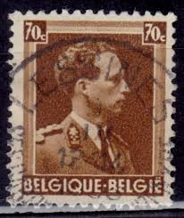 |
| Wikipedia | 1936 in Belgium - Wikipedia | 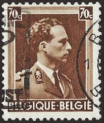 |
| Dreamstime.com | Baudouin of Belgium, King of the Belgians Editorial Stock Image - Image of postage, retro: 177157054 | 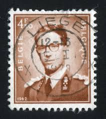 |
| HipStamp | Belgium Sc#360 Used | Europe - Belgium & Colonies, General Issue Stamp / HipStamp | 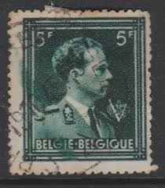 |
| eBay | BELGIUM stamp 1936 5F Sc#293 A83a #.37- used | eBay | 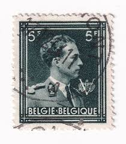 |
| Todocolección | 1952 bélgica. rey balduino - Buy Antique stamps of Belgium on todocoleccion | 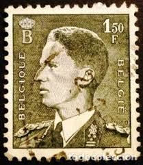 |
| eBay | Belgium - 1951 - King Leopold - New Value - 1Fr - #2115 | eBay | 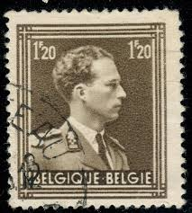 |
| Pngtree | Fondos de Balduino, Fotos y Imágenes De Descarga Gratis | Pngtree | 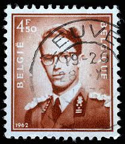 |
| Dreamstime.com | King Baudouin and Queen Fabiola Editorial Image - Image of stamp, kingdom: 95095115 | 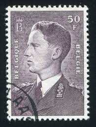 |
| eBay | Travelstamps: Belgium Stamps Scott #449 & 449a, Used NG | eBay | 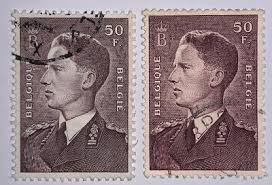 |
| Pngtree | Kings Letter Background Images, HD Pictures and Wallpaper For Free Download | Pngtree | 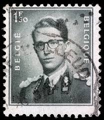 |
| eBay | Belgium - 1970 - King Baudouin - 2.50Fr - #2126 | eBay | 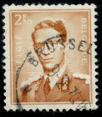 |
| Todocolección | belgica 1989 ivert 2340/43 *** invernaderos rea - Buy Antique stamps of Belgium on todocoleccion | |
| HipStamp | Belgium 457: 4f King Baudouin, used, F-VF | Europe - Belgium & Colonies, General Issue Stamp / HipStamp | |
| eBay | Royalty Belgian & Colonies Stamp Blocks for sale | eBay | |
| eBay | Belgium Stamp King Leopold 5f 1957 VGC | eBay | |
| eBay | CALEDONIA FRENCH COLONIES MUSEUM HISTORICAL FIGURES USED STAMPS LOT (CALE 635) | eBay | |
| eBay | Belgium - 1938 - King Leopold - New Value - 75¢ - #2111 | eBay | |
| lastdodo.com | Jean Malvaux Miscellaneous catalogue - LastDodo | |
| Shutterstock | Collections by Zoltan Katona | Shutterstock Contributor | |
| HipStamp | Belgium 310 75c Leopold used | Europe - Belgium & Colonies, General Issue Stamp / HipStamp | |
| UNC.UA | Філателія — купити марки та конверти Бельгії на аукціоні для колекціонерів UNC.UA |